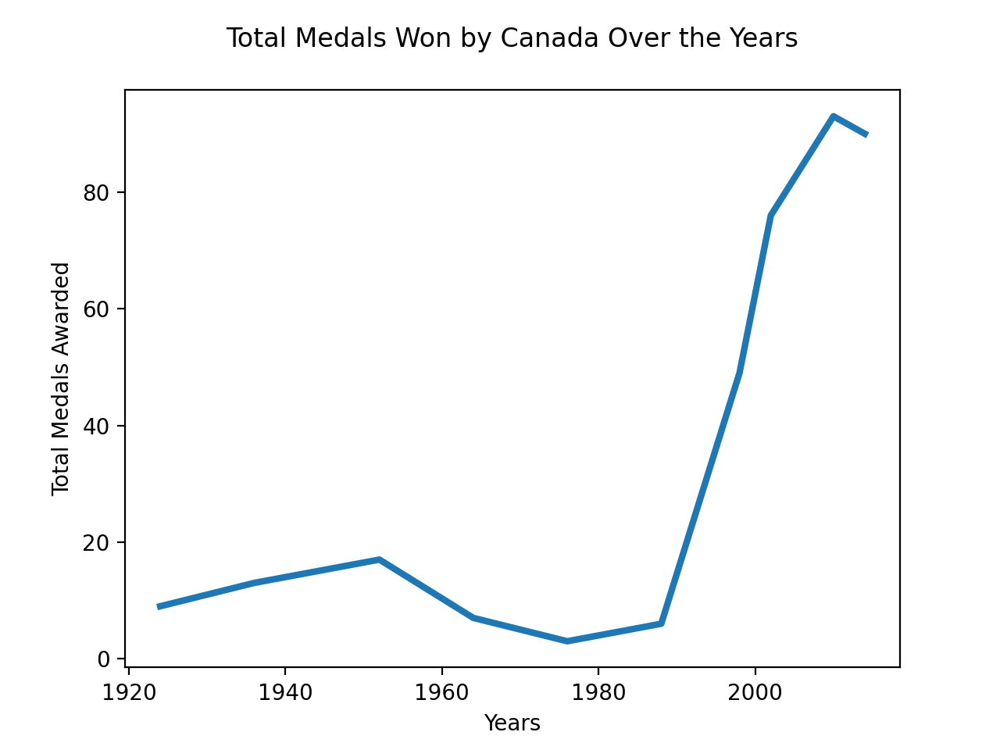

My Fantastic Data Analysis
Data Point 1
Total Medals Won by Canada Over the Years
As you can see by looking at the chart above, Canada has really stepped it up in the Olympics in the last 30 or so years. Though we were never a last place team, we really picked up our game. The incline on the graph is almost 90 degrees, meaning the medals were just flowin g in for Canada.
Data Point 2
Men Vs Women
This chart showcases the amount of medals won by men, and the amount won by women. There really is not that big of a difference, especially considering that men were thought to be more athletic than women.

Data Point 3
Medals Won by Women
This chart speaks wonders. It shows that women did not even begin to place in the Olympics until recently. In the early 2000's women began to win medals regularly. The line on the graph spikes dramatically showcasing that. Women were competing before the 2000's, however, now they're winning more than ever.
Data Point 4
Top 3 Winter Sports for Canada
This pie chart shows the top 3 winter Olympic sports for Canada. Looking at this chart we can see that Canada has won the most medals in hockey, followed by skating, and then skiing.